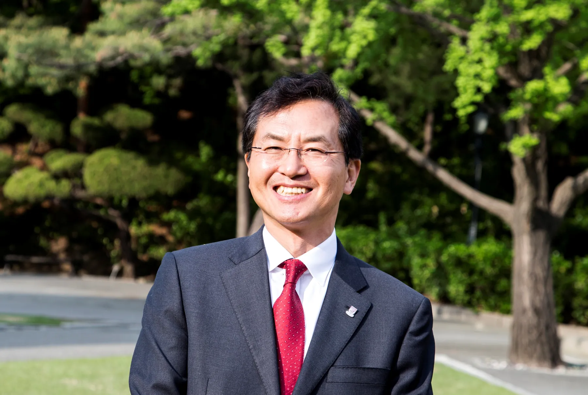
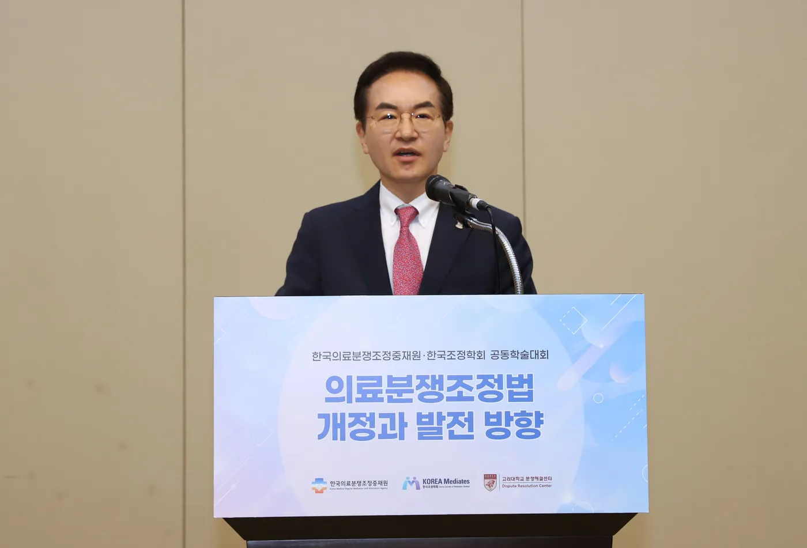
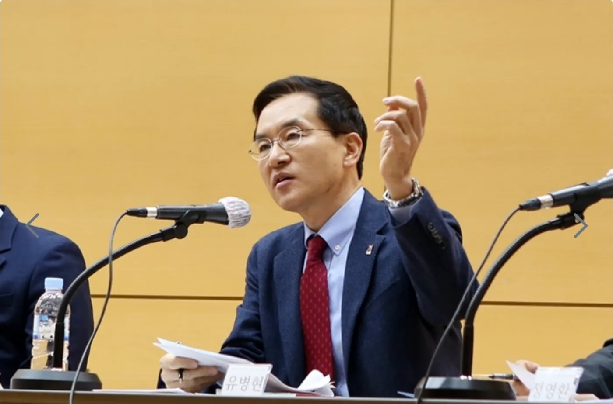
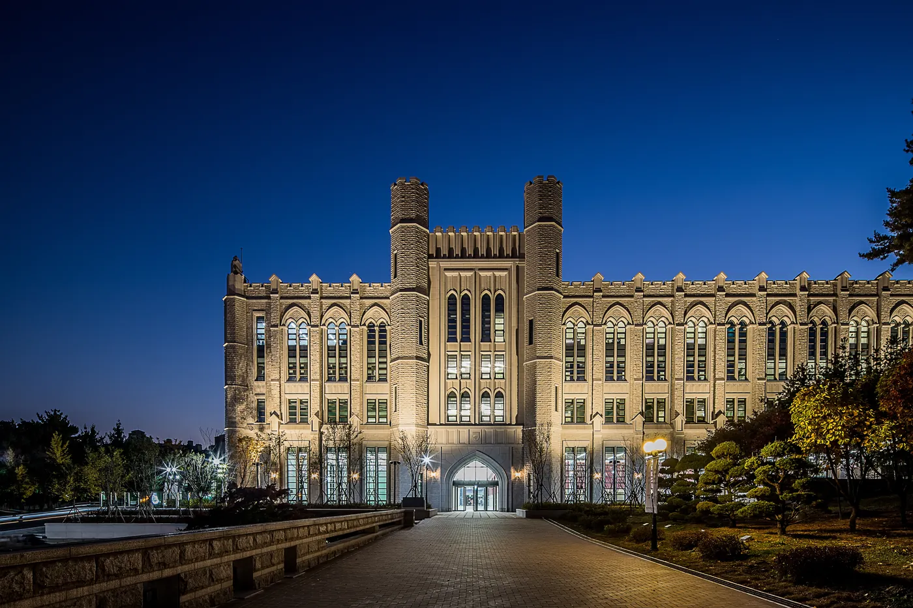
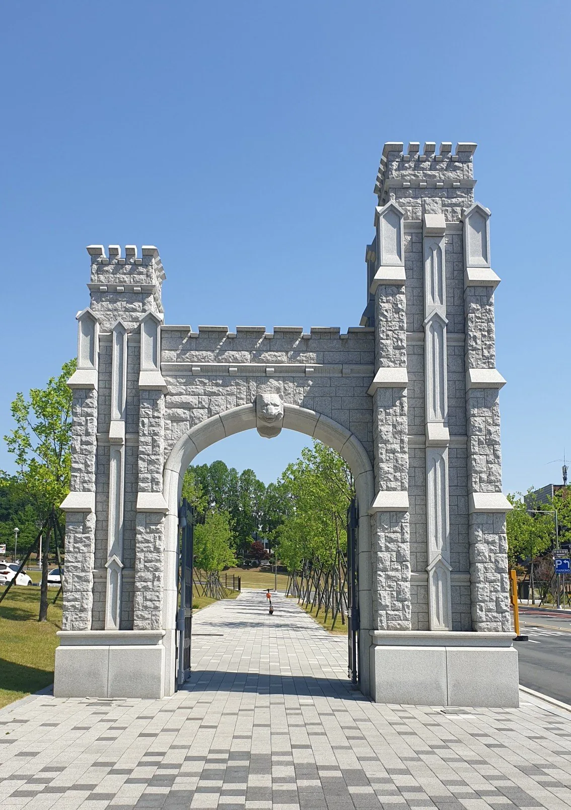
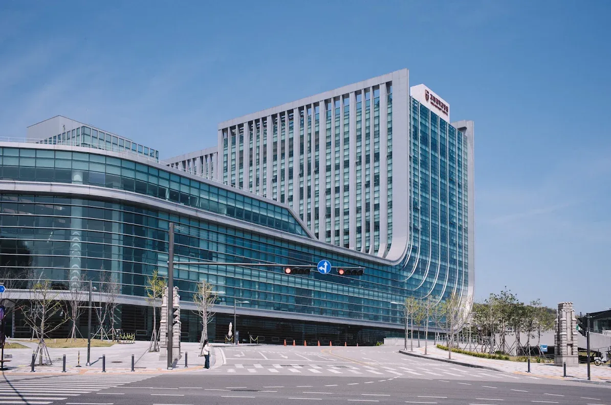
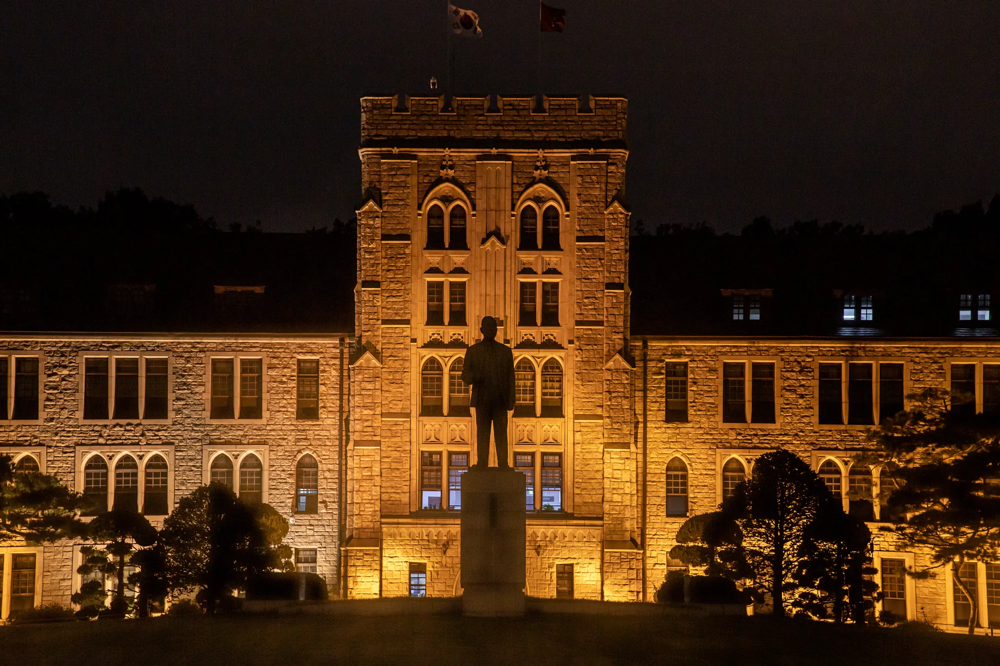
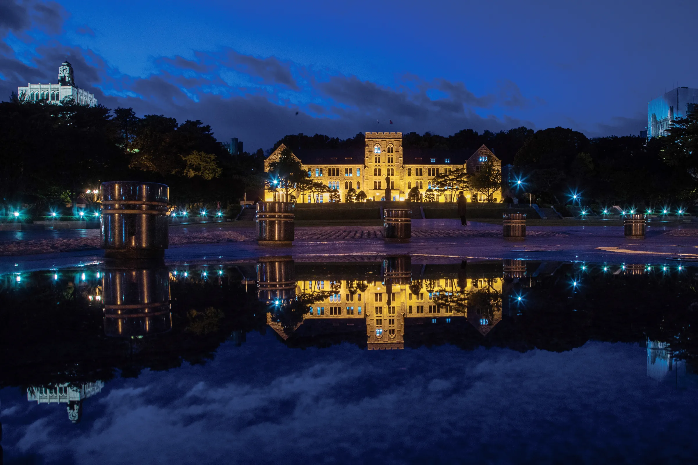

첫째
도전적, 창의적 연구를 위한 연구기금을 조성하겠습니다.
- 장학금, 건축 중심에서 연구비 중심으로 기부금 구조를 전환
- 전임교원 약 1,800명 기준 1인당 1억 원 규모 조성 목표
- 단과대학별 연구자 중심의 자율적 연구비 집행체계 마련
고려대학교 제22대 총장 후보
FINE – KU Free Intelligence, a New Era
유 병 현
지금 고려대학교는
어디를 향해 가고 있습니까?
등록금 동결과 코로나를
함께 견뎌 낸 우리 대학은,
이제 AI라는
더 큰 전환 앞에 서 있습니다.
AI가 수많은 답을 대신 만들어 주는 시대에는
대학이 존재하는 이유를 다시 물을 수밖에 없습니다.

존경하고 사랑하는 고대 가족 여러분

연구자가 무엇에 막히고
행정이 어디에서 멈추는지,
교수의 자리와 본부의 자리
양쪽에서 보았습니다.

법학자의 균형 감각으로 뜻을 모으고,
행정가의 실행력으로 약속을 실현하겠습니다.
대학의 본질 회복
외형과 순위를 좇기보다,
교육과 연구라는 본연의 기능에 충실하겠습니다.
조화로운 다양성
서로 다른 학문과 구성원이
각자의 가치를 인정받는 대학을 만들겠습니다.
한계를 뛰어넘는 도약
예산과 낡은 제도, 낡은 관행에 가로막혀
혁신적인 도전이 멈추지 않게 하겠습니다.
저는 총장 후보자로서
다음의 여섯 가지를 약속합니다.
첫째
둘째
셋째
넷째
다섯째
여섯째
교수님께는 연구와 교육에 온전히 몰입할 수 있는 환경을,
직원 여러분께는 전문성을 존중받고 보람찬 성장의 경로가 열리는 일터를,
학생 여러분께는 일상의 걱정 없이 마음껏 배우고 도전할 수 있는 캠퍼스를 약속드립니다.
이 약속이 구성원 한 분 한 분께 어떤 변화가 되는지,
일곱 가지 질문에 직접 답하겠습니다.
Q1 교수
지금 고려대학교가 가장 필요로 하는 일은
무엇입니까?
연구경쟁력을 획기적으로 높이고,
그 성과가 교육으로 이어지는 선순환을 만드는 것입니다.
1억 원
전임교원 1인당, 단과대별 연구기금 단계적 조성 목표
성과 보상이 아닌 조건 없는 기본연구비 신설
기둥 하나가 교원 한 사람 · 약 1,800명 기준
연구의 기본은 대학이 책임지고,
연구의 방향은 연구자가 결정하도록 하겠습니다.
Q2 전 구성원
AI 시대에 고려대학교를 위해
어떤 일을 하시겠습니까?
총장 직속 AI 혁신 전략위원회를 설치하여 AI 관련 정책과 투자를 유기적으로 설계하고 효율적으로 집행하겠습니다.
Q3 학생
학생들을 위해서
어떤 일을 하시겠습니까?
학생은 대학의 존재 이유이자 미래입니다. 무엇보다 아무 걱정 없이 원하는 공부를 마음껏 할 수 있는 환경을 만들겠습니다.
Q4 직원
직원들을 위해서
어떤 일을 하시겠습니까?
직원 여러분의 전문성과 헌신이 존중받는 대학을 만들겠습니다. AI 도입은 인력 대체가 아니라, 더 가치 있는 일에 집중하기 위한 것입니다.
Q5 교우
교우들을 위해서
어떤 일을 하시겠습니까?
고려대학교에는 입학은 있어도 졸업은 없다는 말이 있습니다. 교우를 후원자가 아니라, 대학 발전을 함께 이끄는 동반자로 모시겠습니다.
Q6 외국인 학생
외국인 학생들을 위해서
어떤 계획을 가지고 있습니까?
What are your plans for international students?
이제는 외국인 학생의 양적 확대를 넘어, 교육의 질을 높일 때입니다.
Q7 교수
우수한 교원 확보를 위해
어떤 방안을 가지고 있습니까?
좋은 인재를 뽑는 데서 끝나지 않고, 오래 머물며 성장할 수 있는 환경을 만들겠습니다.
약속은 실행으로
증명해야 합니다.
기획예산처장 · 학교의 안살림
QS 100위
이삭줍기 작전으로 고려대의 역량이 제대로 반영되는
시스템을 만들어, 진입하는 기반을 구축했습니다.
대외협력처장 · 학교의 바깥살림
1,100억 원
2017년, 고려대학교 역사상 처음으로
한 해 모금액 1,100억 원을 돌파하는 데 기여했습니다.
5000 교우
KU PRIDE CLUB으로 그 마음을 모았습니다.
70%
총장이 되면 업무의 70% 이상을
모금에 쏟겠습니다.



그리고 취임 직후 3개월 동안
모든 구성원의 의견을 먼저 듣겠습니다.
저는 헌신과 존중의 리더십을
실천하는 총장이 되겠습니다.
힘든 일에는 가장 먼저 나서고,
결실을 나눌 때는 구성원을 먼저 생각하겠습니다.
10년 뒤, 그리고 50년 뒤의
고려대학교를 먼저 내다보겠습니다.

公先私後
인촌 선생의 공선사후 정신을 가슴에 새기며,

교가의 마지막 구절처럼
영원히 빛나는 고려대학교를
여러분과 함께 반드시 만들어 가겠습니다.